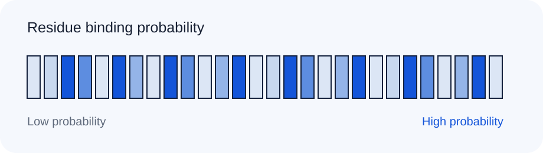

Residues near the RNA-facing surface have the strongest scores. Compare the 0.50 and 0.70 thresholds before exporting.
Completed prediction
RNA-binding pilot
Ribosomal protein S7 evaluated against an RNA interaction partner.
Prediction result
Twelve residues exceed the current probability threshold. The strongest region spans residues 42-67.
How to read this: taller bars indicate residues the model predicts are more likely to contact RNA. These probabilities are predictions, not experimental measurements.

Adjust the probability thresholdSequence annotation
MARGKKIGYS PRKGTGRKGT AAKDAVEAAG VEVEVKPAND VVRVRTPRHV DHDEN
Highlighted residues have predicted binding probabilities above 0.50.
Xinyu Wang